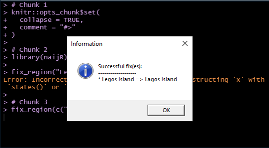

Approach to Correcting Misspelt Local Government Areas
Source:vignettes/interactive.Rmd
interactive.RmdMotivation
Nigeria has 774 Local Government Areas (LGAs). There a number of factors that can make working with them particularly challenging:
- Some LGAs share the same name with the State to which they belong to e.g. Bauchi LGA in Bauchi State and this can lead to wrong use of the data.
- Some LGAs are in different States, but they bear the same name e.g. Obi LGAs in both Benue and Nassarawa States.
- Common LGA spelling errors in the literature, even in official documents.
The solution
The function fix_region is designed to address spelling
errors in sub-national administrative regions of Nigeria, with an
emphasis on States and LGAs.
States
For the States this is quite straightforward; common minor mistakes
can be corrected automatically by this function and since there are only
36 of them, they can otherwise be corrected via an inspection of the
output of the function states().
LGAs
LGA spelling fixes are designed to occur in 3 incrememtal phases. If the user cannot effect the corrections at a particular level s/he can proceed to the next stage. The phases are as follows:
- Automatic fix
- Interactive
Automatic repair
When the spelling error is slight and unambiguous, the function automatically effects the repair of the name.
library(naijR)
fix_region("Legos Island")
#> Error: Incorrect region name(s); consider reconstructing 'x' with `states()` or `lgas()` for a more reliable fixWhen there is only a single misspelt LGA, and especially if it is supplied to the function as a plain string, the function will signal an error. The thinking is that for a single value that is probably provided interactively, an automated solution may not be necessary.
We will now add another LGA to the function:
‘
fix_region(c("Legos Island", "Amuwo-Odofin"))
#> Successful fix(es):
#> -------------------
#> * Legos Island => Lagos Island
fix_region(c("Legos Island", "Amuwo Odofin"))
#> Error: Incorrect region name(s); consider reconstructing 'x' with `states()` or `lgas()` for a more reliable fixInteractive fixes
When the automatic fixes are not feasible, the user has the option of
doing it interactively by calling fix_region and setting
its interactive argument to TRUE. By following
the prompts, the mispelt LGA as well as possible replacements are
presented. All the user needs to do is to select the desired replacement
value. This is particularly useful when the user is not sure of what the
correct spelling might be.
When a misspelt LGA has more than one match, the interactive approach is the viable option for effecting fixes.
adamawa <- c("Fufore", "Demsa", "Machika", "Fufure", "Ganye", "Hong")
if (!all(is_lga(adamawa)))
adamawa <- fix_region(adamawa)
#> Warning: 'Machika' approximately matched more than one region - Michika, Machina
#> Fix(es) not applied:
#> --------------------
#> * Machika
#>
#> Successful fix(es):
#> -------------------
#> * Fufore => FufureWe see that the purported LGA ‘Machika’ matches more than one LGA in
the country. The original intent was to use “Michika”. To address it, we
run fix_region interactively. This method of the function
is for class lgas so
adamawa <- fix_region(lgas(adamawa), interactive = TRUE)